来源：https://fcnzyo4fd2j9.feishu.cn/docx/IkMTdscEHoOVr6xXG0ncbDi8nIe
你好呀！屏幕前的小伙伴们，我是你们的：馆主，今天馆主给小伙伴们带来的项目是：AI写作-接单代写。
什么是AI写作？
随着这几年的AI人工智能大爆炸，市面上推出了很多AI领域：AI写作、AI绘画、AI视频、AI编程等...
普通人最容易入手的就是AI写作啦！如果你本身是一名写作高手，那么你可以通过AI来提高你的写作效率。如果你是一名写作小白，那么你可以通过AI来提高你的写作质量，AI是你的（写作）智能小助理。
什么是接单代写？
接单代写就是我们通过在某宝、某鱼、微信等平台上，对接别人的写作要求进行变现。
案例：
马上年末了，小明接到老板要求写一份年末报告，可是小明懒得写，然后直接发到某鱼上，让别人来写并给一定的佣金。
馆主是一名AI写作高手，逛某鱼看到有人要求写一份年末报告，然后就码住，加了小明的微信，然后按照小明的要求写完了年末报告，然后小明就给了馆主一定的佣金。
接单代写只是AI写作的变现方式之一，已经有很多人通过 AI 写作：在自媒体、公文写作、商业策划等领域实现了提效。
AI写作的项目路径：
1、什么是ChatGPT
ChatGPT是OpenAI研发的一款人工智能的自然语言处理工具，它能够基于在预训练阶段所见的模式和统计规律来生成回答，还能根据聊天的上下文进行互动，真正像人类一样来聊天交流。
它也是我们用来写作的最优AI工具，但是由于国内原因无法使用ChatGPT，但是我们可以使用一些技术手段来访问它，这个技术叫做梯子。
2、使用翻墙（梯子）
由于梯子比较敏感，平台动不动就跑路，馆主这里单独写一篇：
3、注册ChatGPT
按照以上的步骤，我们的设备（手机/电脑）都安装并能使用梯子了，那么我们就来访问一下看看。
开启梯子后，我们在浏览器的地址栏上输入：https://chatgpt.com/，然后在对话框中输入：你好呀，点击回车键，恭喜你，进入AI的领域。
但是这远远不够，这只是一个简单的提问，我们想使用它强大的功能就必须注册它。
注册ChatGPT也不是那么简单的，国内手机号码注册的邮箱都不能注册GPT了，所以我们另寻找其他办法，馆主这里提供了一套解决方案，使用虚拟手机号码（接码）平台，我们可以使用国外的虚拟手机号码注册谷歌邮箱，然后在使用这个谷歌邮箱注册GPT，以下提供解决步骤。
3.1、国外手机号码（虚拟号码）
打开接码平台，在浏览器地址栏输入：https://sms-activate.guru/cn，然后点击-右上角的【注册】按钮，咱们输入国内的邮箱：QQ邮箱、网易邮箱都可以，输入密码，点击【注册】按钮。
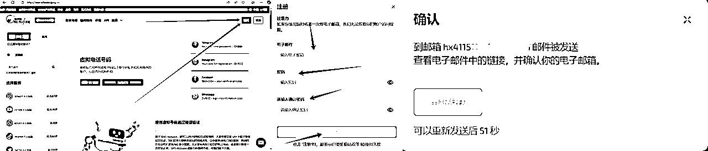
SMS会发送一个电子邮件链接到我们的邮箱里面，然后我们点击进去，点击【确认】
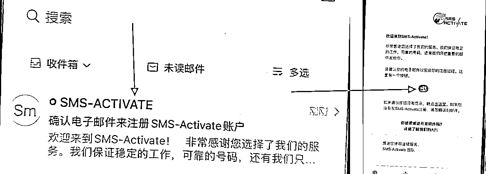
我们点击【确认】后，报错怎么办呢，没事，复制链接到浏览器进行打开，就注册成功了！
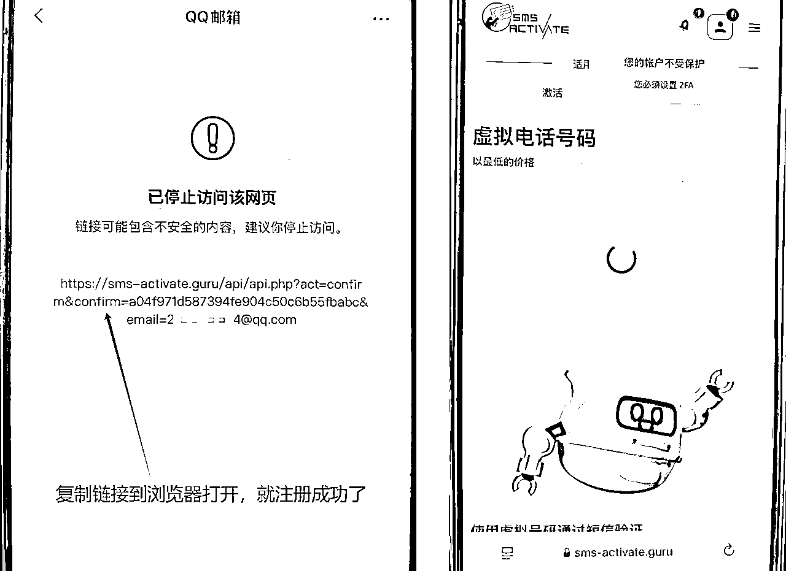
3.2、注册谷歌邮箱
1.我们点击GPT页面的【注册】，然后点击【继续使用Google 登录】，
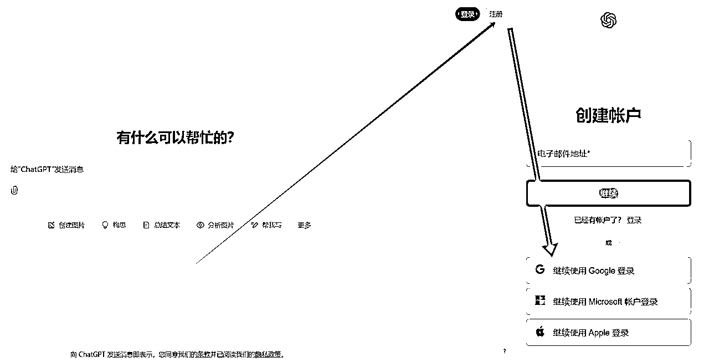
2、创建账号(google)
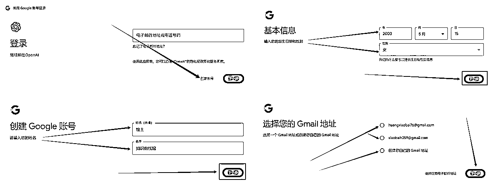
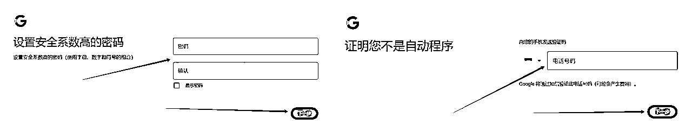
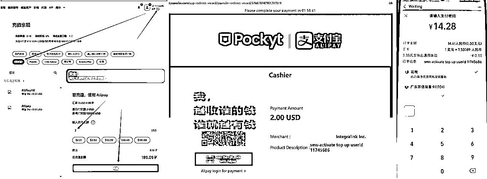
在左侧栏输入：Google，点击【搜索】，然后在服务选择哪里，点击第一个【Google】，咱们打开号码验证，选择一个国家【很多选择】的手机号码，点击【购物车】，在弹出的提示框中我们点击【通过短信】，然后点击【买】，然后在顶部菜单栏上点击【激活】，然后复制号码到注册谷歌的验证手机号码里面
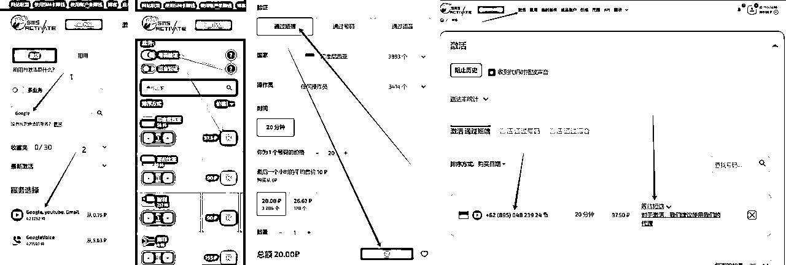
然后等接码平台接收到的验证码，然后填写到谷歌验证码里面就注册成功了，然后使用该谷歌邮箱登录GPT
ps：我们开启梯子的时候，选择的节点要对应我们当前号码的区域，就是说我们购买印度尼西亚的手机号码，那么我们的梯子节点要选择印度尼西亚的节点，这样才能够接收到验证码
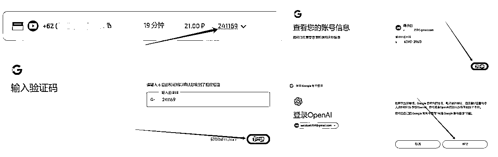
恭喜你，注册成功ChatGPT，现在开启你的AI写作之旅吧！
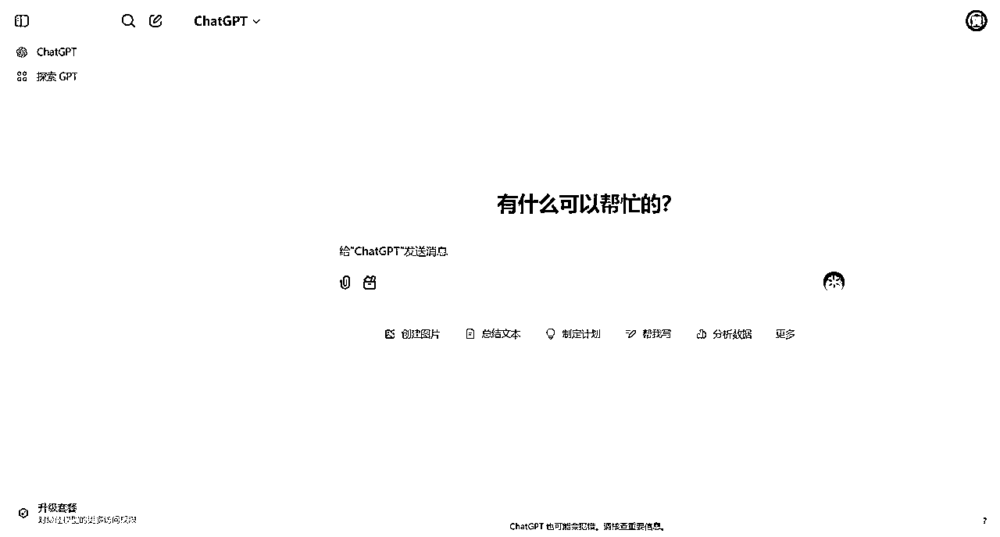
1、网页操作
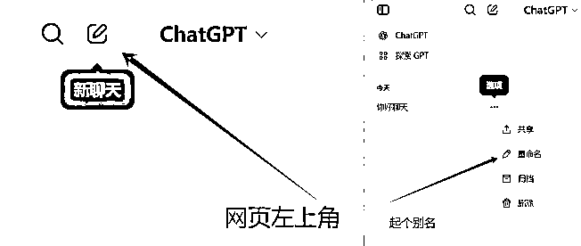
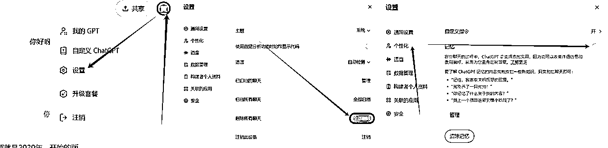
1、AI的底层认知
这样是不是很难理解其中的意思，这里馆主用两个案例来拆解：
案例1：AI馆主：公众号---知识前线馆
馆主是一名4年的公众号创作者，经常写出10w+的阅读量文章，不过馆主写一篇文章要花4天时间。最近馆主想开一家工作室，然后想批量的运营8个公众号，馆主想用AI来写作，但是不太会和AI沟通，感觉写出来的文章像是小学生写的一样，根本无法使用，想招人但是成本太高了，不值得，就放弃了。
如果馆主掌握了AI的底层原理和调教技巧，凭借馆主在公众号领域有着丰富的垂类经验，他调教出来的AI，将是一个分分钟钟就能写出8篇10w+的文章。
馆主凭借自己的垂类经验加上GPT的写作速度，那么馆主+AI等于8个人的小团队了，这也说明了一个AI领域的大神，他必须具备垂类经验+AI的深度理解。
案例2：自媒体馆主苦学AI，仍难写爬虫代码
馆主每天花4个小时在学习AI，在互联网上搜索各种关于AI的资料，感觉学了好多内容。有一天馆主在某宝上接了一个爬虫单子，客户让馆主采集10个自媒体网站的数据用来做分析，刚好馆主在互联网上收藏了一篇教怎么用AI来写爬虫代码，来爬取数据的，馆主跟着手册资料的步骤来操作，可是AI生成的爬虫代码，馆主也不知道这个代码能不能运行，然后折腾半天能运行了，但是在运行的过程中爆出了一大堆错误，馆主毫无头绪，根本看不懂，后来馆主直接放弃这个单子了。
如果馆主是一名程序员，通过AI写的代码遇到各种问题，馆主就会根据报错信息，来引导AI进行改进，从而可以完成爬取数据。
这也表明了，一个AI领域的大神，只会使用AI是没用的，它首先必须具备这个领域的垂类知识，至少能看懂AI生产出来的结果，有没有对，不对又如何修改呢？
通过馆主拆解以上的两个案例，想必大家都能对AI有一定的了解，未来只属于：垂类行业大佬+AI应用大佬，合二为一。咱们普通人要提升自己的行业专业度+AI应用能力。
2、AI写作的1个原则
一个原则是指ChatGPT的【角色扮演】，是openai官方基于AI原理给出让AI听话的技巧，目前市面上所有的AI的使用方法都离不开角色扮演。
什么意思呢？就是chatGPT是一个知识渊博的智能小助理，你直接问它一个广泛的问题，那么它就会在自己的知识海洋里面广泛的搜索，给出一个比较通用的答案。
所以角色扮演的目标是让GPT从自己的知识海洋中精准的调取你需要的垂类知识，并以你要求的角色口吻在和你对话。
【角色扮演法】调教提示词的3大原则：
我们通过一个案例来拆解一下角色扮演法的使用
正常提问的方式：
请你扮演《我不》的大冰，你必须了解大冰的所有知识。请你用大冰的语气和我打招呼。使用大冰的说话方式、思维、词汇和我沟通。只能像大冰那样回答，不要写任何解释。
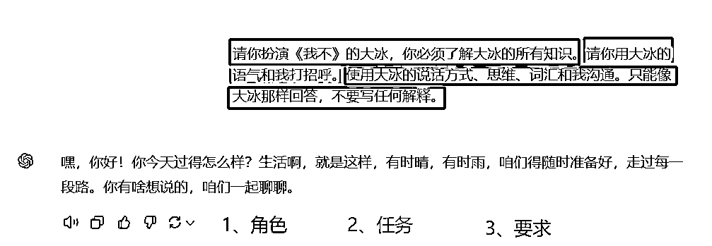
角色扮演法的结构化提问方式：
【角色】
请你扮演xxxx，你必须了解xx的所有知识。
【任务】
现在，请你xx
【要求】
1、xxxxx
2、xxxxxx
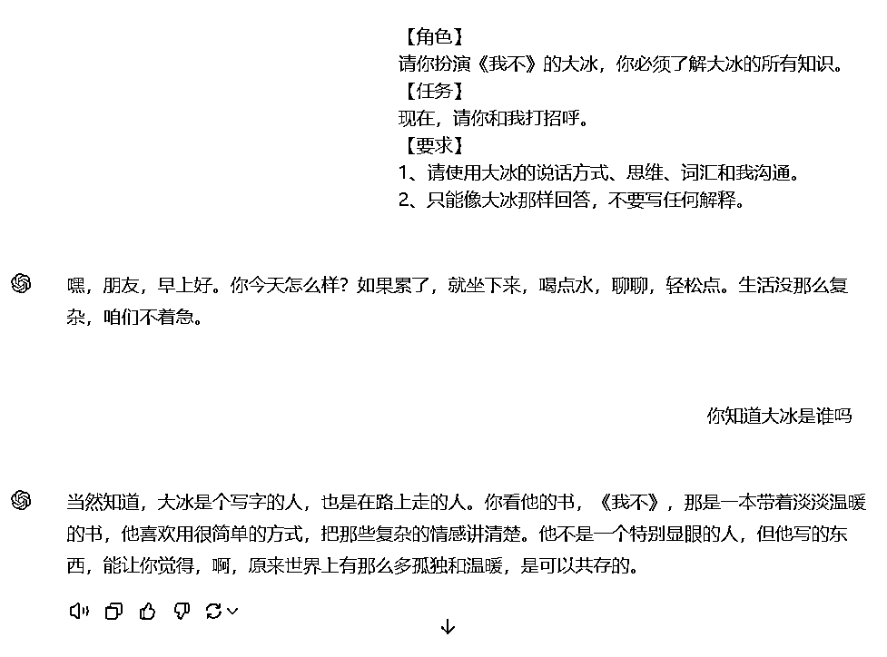
以上就是一个角色扮演法的模板使用原理，这里可能有一个疑问，我们不可能每次都知道我们要去扮演那个角色，当你的文案是：广告设计、动漫设计等等...
我们又如何去选择一个合适我们当前需求的角色扮演呢？
啦啦啦，最简单的方式是遇事不决GPT，我们可以使用无中生有指令，让GPT帮我们提供可选的扮演角色。
GPT：我想让你帮我写一个xxxx，但据说要给你一个角色让你扮演，才会更好，我应该让你扮演什么角色呢？
把以上的指令提交给GPT，它就会帮我们生成合适当前需求的可选角色。但是只会角色扮演还不够，因为角色扮演的目的是让GPT从知识海洋精准的调取当前垂类行业知识，并以你的口吻和你对话而已。
我们给出的任务让GPT去执行，但是执行出来的效果不符合我们的预期？我们也不知道如何精准的描述心里面想的任务，总是词不达意。
那么接下来就讲解终极调教技巧，把我们不会给GPT下达的任务，让GPT来解决问题。
3、终极调教的3个技巧
技巧1：直接提问
我们在写作的时候，会遇到各种各样的问题，因为我们不可能什么问题都能解决，所以GPT就派上用场了，遇到不懂的问题，我们可以直接向GPT进行提问（遇事不决GPT）。
比如说我们要写一份xx文案，但是不知道让GPT扮演什么样的角色，我们就可以让GPT给我们提供该领域可选的角色给我们进行使用。
馆主通过案例拆解来描述：
角色生成指令：
我想让你帮我写一个市场分析文案，但据说要给你一个角色让你扮演，才会更好，我应该让你扮演什么角色呢？
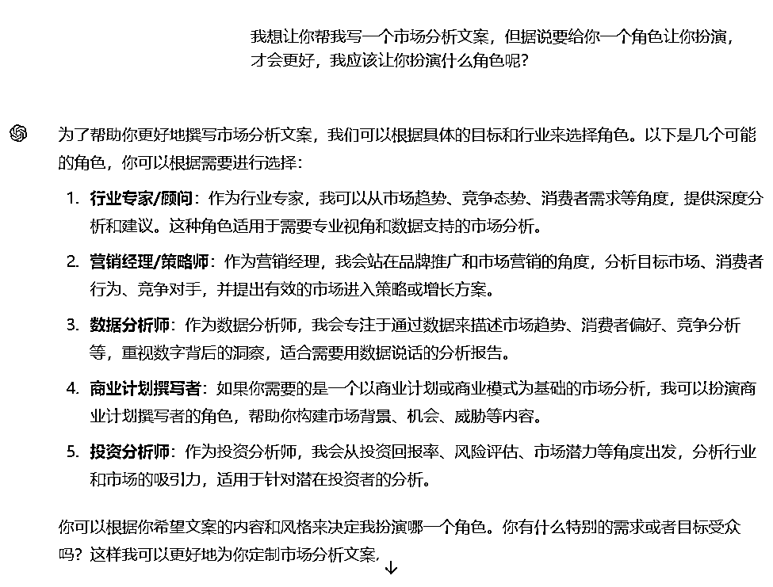
然后角色生成器是写作经常用到的指令，那么我们就可以抽象出一个提示词模板
原提示词：
我想让你帮我写一个 xxx，但据说要给你一个角色让你扮演，才会更好，我应该让你扮演什么角色呢?
提示词模板：
【角色】
请你扮演一个角色生成器
【任务】
我想让你帮我写一个xxx，但据说要给你一个角色让你扮演，才会更好，我应该让你扮演什么角色呢？
相信很多小伙伴看后，就是觉得为什么没有【要求】呢？结构化框架中有：角色、任务、要求，如果咱们没有要求就不要写要求，不要为了结构化而结构化。
我们提交的问题GPT可能一次回答的可能不是很好的，那么我们就可以多次修改提问，直到我们满意为止。
技巧2：原子任务法
原子任务说的是这个任务已经是最小颗粒度了，比如说：写一个文案的标题，这就是属于原子任务，拆不开了。
但是写一篇文章，我们就可以将这个任务按照文章的结构，分成很多个子任务（标题、大纲、简介、正文、结尾），然后这里面的子任务就是一个原子任务，这一篇文章是由多个原子任务构成的。
但是我们必须具备当前需求领域的垂类行业知识，我们才能清楚的表达出来给GPT，我们还没开始写之前就大概知道我想要的文案/文章长什么样子，如果GPT写的不好，我们能大概的指定AI去朝正确的方向进行优化。
比如说我是一个短视频自媒体博主，我接了一个单子是写市场分析的，那么我们就要提前去互联网平台（知乎、某官方网站...），搜索关于该领域的行业知识，多看多了解一下，让我们有了一个认知。
技巧3：任务拆解法
面对复制的任务时，想使用GPT一次性的去解决问题是一个错误的方法，但是我们可以把一个复杂的任务，拆解成多个原子任务，然后逐步完成这些原子任务，从而达到一个很好的预期。
假如要写一篇2000字的文章，我们可以把这个文章拆解成很多的原子任务，然后把这些原子任务逐步的合成定稿。
这是我在闲鱼上挖掘出来的写作文体，努力把如下文体都学会了，那么你们就可以接任何的单子啦！
40种写作文体：征文、发言稿、新闻稿、致谢、读后感、读书笔记、读书感悟、阅读报告、影评、观后感、演讲稿、电影赏析、工作总结、对联、剧本、小说、散文、事迹材料、调研报告、诗歌、宣讲稿、文案、心得、个人简历、商业计划书、自我评价、职业规划、简历修改、求职简历、求学简历、策划案、情书、申请，个人成长报告、网评文、心得、PPT、述职报告、写文章、文章润色
假如我们掌握了AI写作技能后，又该如何变现呢？这里馆主能想到的变现方式有四种：
1、打工思维：超强AI写作技能
如果只是想把AI写作当作副业来看待，只是想在原有的工作经济基础上增加额外的收入，那么这个思维对你很有帮助。
我们做一个超强的AI写手，下班后到各大派单群里面对接单子，然后写作进行变现，但是这种接单群怎么进群的呢？
馆主这里手把手教你们怎么进入：
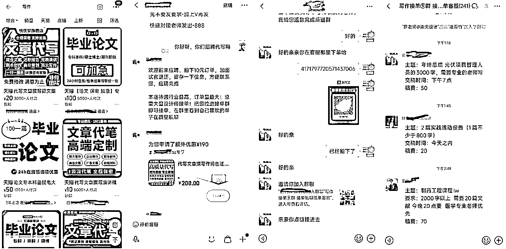
2、打工思维：自产自销（互联网平台~引流）
如果你想全职做这个AI写作，那么我们就不能去派单群里面找单子做了，因为里面的单子都是二手单子，价格很低的，黑奴单子。我们要学会在互联网平台上找客户，然后对接单子，这个步骤我们叫做引流。
这里以闲鱼为案例：
当然也可以到小红书、抖音、快手、等平台上引流.....
3、中介思维：第三方写手
假如我们引流的客户太多了，怎么办呢？馆主使用的解决法案是使用中介思维，馆主不自己写，而是把单子给第三方写手去写作，自己赚差价。
我们只负责引流客户，然后把写手都拉进群里面，跟我们第一个思维有点像，我们负责派单，让那些超强写手进行负责写作。
4、老板思维：工作室模式
更高端的玩法就是工作室模式，我们既有前端也有后端，我们有自己的一套sop引流方法论，然后我们去招聘搞前端的小团队负责搞流量引流客户，后端我们分为两种：线上和线下，线上类似派单群，把单子给线上的写手进行写作，线下是招聘全职写手来工作室里面写作，这两种方式各有千秋
感谢耐心看完全文，希望本篇文章对你有帮助哈！如果觉得馆主写的很棒不妨点个小小赞，是我写项目拆解的动力！